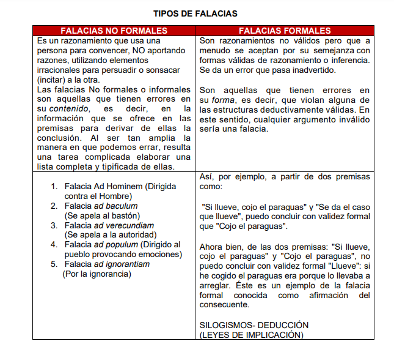

La filosofía (del griego antiguo φιλοσοφία 'amor a la sabiduría' derivado de φιλεῖν [fileîn] 'amar' y σοφία [sofía] 'sabiduría'; trans. en latín como philosophĭa) es una disciplina académica y un conjunto de reflexiones y conocimientos de carácter trascendental que, en un sentido holístico, estudia la esencia, las causas primeras y los fines últimos de las cosas. Trata de responder a una variedad de problemas fundamentales acerca de cuestiones como la existencia y el ser (ontología y metafísica), el conocimiento (epistemología y gnoseología), la razón (lógica), la moral (ética), la belleza (estética), el valor (axiología), la mente (fenomenología, existencialismo, filosofía de la mente), el lenguaje (filosofía del lenguaje) y la religión (filosofía de la religión). A lo largo de la historia, muchas otras disciplinas han surgido a raíz de la filosofía, y a su vez es considerada la base de todas las ciencias modernas por muchos autores.
La falacia
Una falacia es, como señala Irving Copi (1987), un argumento incorrecto, pero psicológicamente persuasivo. La fuerza de una falacia, reside en su carácter convincente, el cual se debe a que tiene la apariencia de estar correctamente construido, pero cuando lo analizamos con detenimiento, notamos que el paso de las premisas a la conclusión no es el adecuado, debido a que las premisas no son pertinentes para lo que se quiere defender. Engaño o mentira que se esconde bajo algo, en especial cuando se pone de manifiesto su falta de verdad.
1.-Son razonamientos engañosos.
2.-Son razonamientos NO Validos.
3.-Son razonamientos INCORRECTOS.
4.-Son razonamientos que parecen ser verdaderos, pero no lo son.
5.-Es un razonamiento FALAZ o ERRÓNEO.
6.-Que solo pretende quien lo emite, busca PERSUADIR O CONVENCER a la otra persona.
7.-La Falacia vulnera (hiere-lastima-violenta) todo principio lógico.
-Falacias formales: Son razonamientos no válidos pero que a
menudo se aceptan por su semejanza con
formas válidas de razonamiento o inferencia.
Se da un error que pasa inadvertido.
Son aquellas que tienen errores en
su forma, es decir, que violan alguna de
las estructuras deductivamente válidas. En
este sentido, cualquier argumento inválido
sería una falacia.

Conectores lógicos
Los conectores lógicos son palabras o expresiones que sirven para relacionar las ideas
dentro de un texto. En ese sentido, su presencia es fundamental para que un texto sea
mucho más que un conjunto de oraciones independientes y autónomas. La claridad de la
argumentación de un texto depende principalmente del uso adecuado de los conectores;
un conector lógico mal utilizado puede cambiar completamente el sentido del texto.
-Conector lógico de negación: Usan el símbolo ¬. Toman una proposición P y la
convierten en la proposición ¬P cuyo valor de verdad es opuesto al de P.
Ejemplo: Hoy no es festivo.
Esta proposición compuesta se construye a partir de la proposición simple: “Hoy es festivo” y el
conectivo lógico "no".
-Conector lógico de conjunción: Usan el símbolo ∧. Toman dos proposiciones P y Q y las
convierten en la proposición P ∧ Q, que para ser verdadera necesita que tanto P como Q sean
verdaderas.
Ejemplo: Mercurio y Plutón son planetas.
Esta proposición compuesta se construye a partir de la proposición simple: “Mercurio es un planeta”, el
conectivo lógico "no" y "plutón es un planeta".
-Conector lógico de disyunción: Usan el símbolo V. Toman dos proposiciones P y Q y las
convierten en la proposición P V Q, que para ser verdadera necesita que alguna de P o Q lo sean (o
ambas).
Ejemplo: Mercurio y Plutón son planetas.
Esta proposición compuesta se construye a partir de la proposición simple: “Mercurio es un planeta”, el
conectivo lógico "no" y "plutón es un planeta".
-Conector lógico condicional: Usan el símbolo →. Toman dos proposiciones P y Q y las
convierten en la proposición P → Q, que para ser verdadera necesita que para ser verdadera se necesita o
bien que P como Q sean verdaderas.
Ejemplo: Te daré el dinero para ir al cine, siempre y cuando hayas terminado tus
tareas.
-Conector lógico bicondicional: Usan el símbolo ↔. Toman dos proposiciones P y Q y las
convierten en la proposición P ↔ Q, que para ser verdadera necesita que P ↔ Q sea verdadera y que Q ↔ P
sea verdadera.
Ejemplo: Saldré de casa si y sólo si anochece.
Las tablas de verdad es una estrategia de la lógica simple que permite establecer la validez de varias propuestas en cuanto a cualquier situación, es decir, determina las condiciones necesarias para que sea verdadero un enunciado propuesto, permitiendo clasificarlos en tautológicos (resultan verdaderos durante cualquier situación) contradictorias (son enunciados falsos en la mayoría de los casos) o contingentes (enunciados que no pueden será tantos verdaderos como falsos no existen tendencia a un solo sentido).
Permite diferentes aspectos del enunciado como las condiciones que lo hacen verdadero y cuáles son sus conclusiones lógicas, es decir, si el enunciado propuesto es verdadero o falso. Esta tabla fue ideada por Charles Sander Peirce aproximadamente en 1880, pero la más utilizada es el modelo actualizado de Luidwin Wittgenstein en 1921.